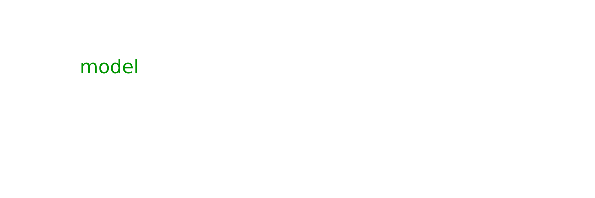

<section id="any_model">
    <div class="container">
        <div class="row">
            <div class="col-xs-10 col-xs-offset-1
                        col-sm-8 col-sm-offset-2
                        col-md-6 col-md-offset-3
                        col-lg-4 col-lg-offset-4 text-center">
                <h2 class="section-heading">Any Model</h2>
                <hr class="primary">
            </div>
        </div>
        <div class="row">
            <div class="col-xs-10 col-xs-offset-1
                        col-sm-8 col-sm-offset-2
                        col-md-6 col-md-offset-3
                        col-lg-6 col-lg-offset-3 text-center">
                
                <div class="service-box">
                    <i class="overlay fa fa-4x wow fadeIn text-primary" data-wow-delay="3.6s">
                        
                    </i>
                    <i class="overlay fa fa-4x wow fadeIn text-primary" data-wow-delay="3.4s">
                        
                    </i>
                    <i class="overlay fa fa-4x wow fadeIn text-primary" data-wow-delay="3.2s">
                        
                    </i>
                    <i class="overlay fa fa-4x wow fadeIn text-primary" data-wow-delay="3.0s">
                        
                    </i>
                    <i class="overlay fa fa-4x wow fadeIn text-primary" data-wow-delay="2.8s">
                        
                    </i>
                    <i class="overlay fa fa-4x wow fadeIn text-primary" data-wow-delay="2.6s">
                        
                    </i>
                    <i class="overlay fa fa-4x wow fadeIn text-primary" data-wow-delay="2.4s">
                        
                    </i>
                    <i class="overlay fa fa-4x wow fadeIn text-primary" data-wow-delay="2.2s">
                        
                    </i>
                    <i class="overlay fa fa-4x wow fadeIn text-primary" data-wow-delay="2.0s">
                        
                    </i>
                    <i class="overlay fa fa-4x wow fadeIn text-primary" data-wow-delay="1.8s">
                        
                    </i>
                    <i class="overlay fa fa-4x wow fadeIn text-primary" data-wow-delay="1.6s">
                        
                    </i>
                    <i class="overlay fa fa-4x wow fadeIn text-primary" data-wow-delay="1.4s">
                        
                    </i>
                    <i class="overlay fa fa-4x wow fadeIn text-primary" data-wow-delay="1.2s">
                        
                    </i>
                    <i class="overlay fa fa-4x wow fadeIn text-primary" data-wow-delay="1.0s">
                        
                    </i>
                    <i class="overlay fa fa-4x wow fadeIn text-primary" data-wow-delay=".8s">
                        
                    </i>
                    <i class="overlay fa fa-4x wow fadeIn text-primary" data-wow-delay=".6s">
                        
                    </i>
                    <i class="overlay fa fa-4x wow fadeIn text-primary" data-wow-delay=".4s">
                        
                    </i>
                    <i class="overlay fa fa-4x wow fadeIn text-primary" data-wow-delay=".2s">
                        
                    </i>
                    <i class="overlay fa fa-4x wow fadeIn text-primary">
                        
                    </i>
                </div>
            </div>
        </div>
        <div class="row">
            <div class="col-xs-10 col-xs-offset-1
                        col-sm-4 col-sm-offset-0
                        col-md-4 col-md-offset-0
                        col-lg-4 col-lg-offset-0
                        text-center">
                
                <h3>Example</h3>
                <p class="text-muted">Your ML pipeline is written in PyTorch</p>
                <p class="text-muted">DeepMind releases an awesome model on GitHub, written in JAX.
                    We'll use <a href="https://github.com/deepmind/deepmind-research/tree/21084c8489c34defe7d4e20be89715bba914945c/perceiver">PerceiverIO</a>
                    as an example</p>
                <p class="text-muted">You'd like to try this out in your pipeline</p>
            </div>
            <div class="col-xs-10 col-xs-offset-1
                        col-sm-4 col-sm-offset-0
                        col-md-4 col-md-offset-0
                        col-lg-4 col-lg-offset-0
                        text-center">
                
                <h3>Current Solution</h3>
                <p class="text-muted">Implement the model in PyTorch yourself, spending time and energy ensuring every detail is correct</p>
                <p class="text-muted">Otherwise, wait for a PyTorch version to appear on GitHub, among the many re-implementation attempts that appear
                    (<a href="https://github.com/lucidrains/perceiver-pytorch">a</a>,
                     <a href="https://github.com/krasserm/perceiver-io">b</a>,
                     <a href="https://github.com/Rishit-dagli/Perceiver">c</a>,
                     <a href="https://github.com/esceptico/perceiver-io">d</a>,
                     <a href="https://github.com/huggingface/transformers/tree/v4.16.1/src/transformers/models/perceiver">e</a>,
                     <a href="https://github.com/keras-team/keras-io/blob/master/examples/vision/perceiver_image_classification.py">f</a>)
                </p>
                <p class="text-muted">Despite best efforts, there are subtle bugs and deviations from the original</p>
            </div>
            <div class="col-xs-10 col-xs-offset-1
                        col-sm-4 col-sm-offset-0
                        col-md-4 col-md-offset-0
                        col-lg-4 col-lg-offset-0
                        text-center">
                
                <h3>Ivy Solution</h3>
                <p class="text-muted">Instantly transpile the JAX model to PyTorch</p>
                <p class="text-muted">This creates an identical PyTorch equivalent of the original model</p>
            </div>
        </div>
    </div>
</section>
